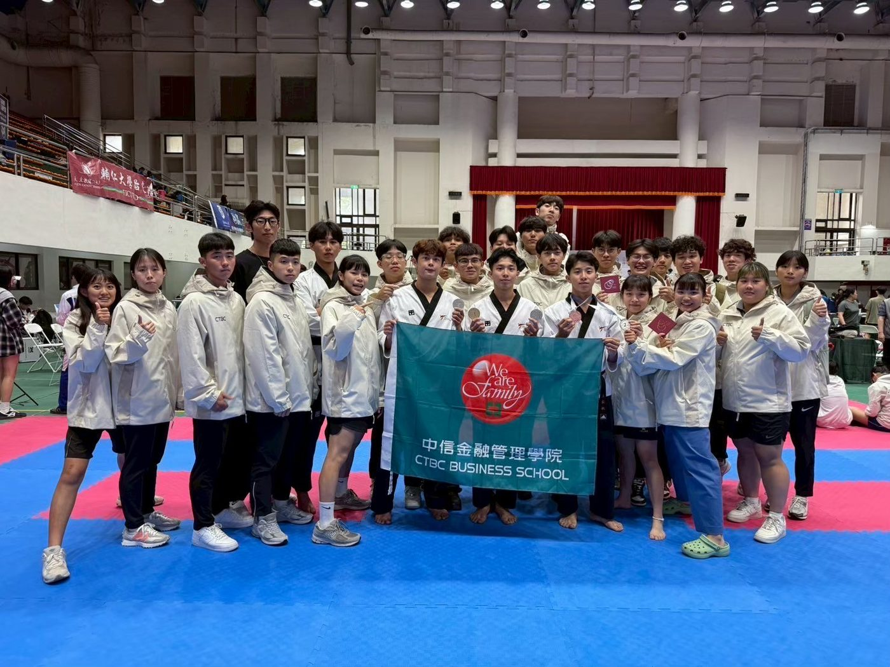
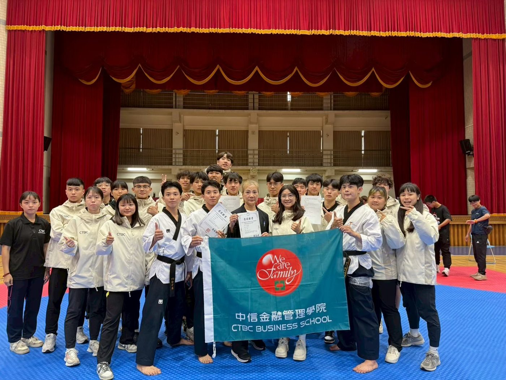
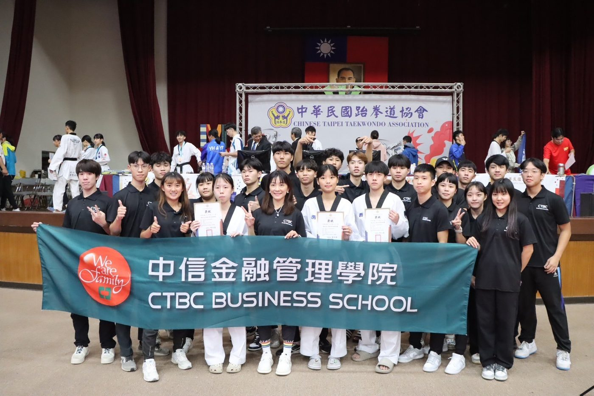

01我的故事
中信金融管理學院跆拳道隊-對打
中信金融管理學院自104年以來，成立專業運動代表隊，並配合政府體育政策，推動學校體育運動與培育運動產業人才，以活絡校園的運動風氣。強化運動競賽體能與技術，有效開發運動人力資源，厚植運動教育發展基石，促使體育水準發展與進步；加強運動員體能，鍛鍊耐力鬥志精神，增強選手競爭力，發揮運動潛能，並且積極培育大專跆拳道選手，鼓勵以賽代訓，累積經驗進而代表國家參加國際性賽事爭取最高榮譽，以期獲得獎牌，爭取最高榮譽。
本校為培育大專優秀的跆拳道選手，期望透過國外移地訓練，增加選手經驗及增廣見聞。跆拳道運動自列入奧運項目並且替臺灣摘下兩面奧運金牌後，參與跆拳道訓練選手日漸增多，競爭日益激烈，欲取得理想成績難度也提升許 多。透過交流讓選手們增強自信、擴展視野並培養出不怕苦、不怕難、勇於挑戰的精神，因此為培訓選手，安排至韓國移地訓練並參與韓國高強度的賽事，為增強選手競技實力及國際經驗，盼日後能成為國家運動競技訓練之搖籃，以增強學生參加國際競賽的能力。


